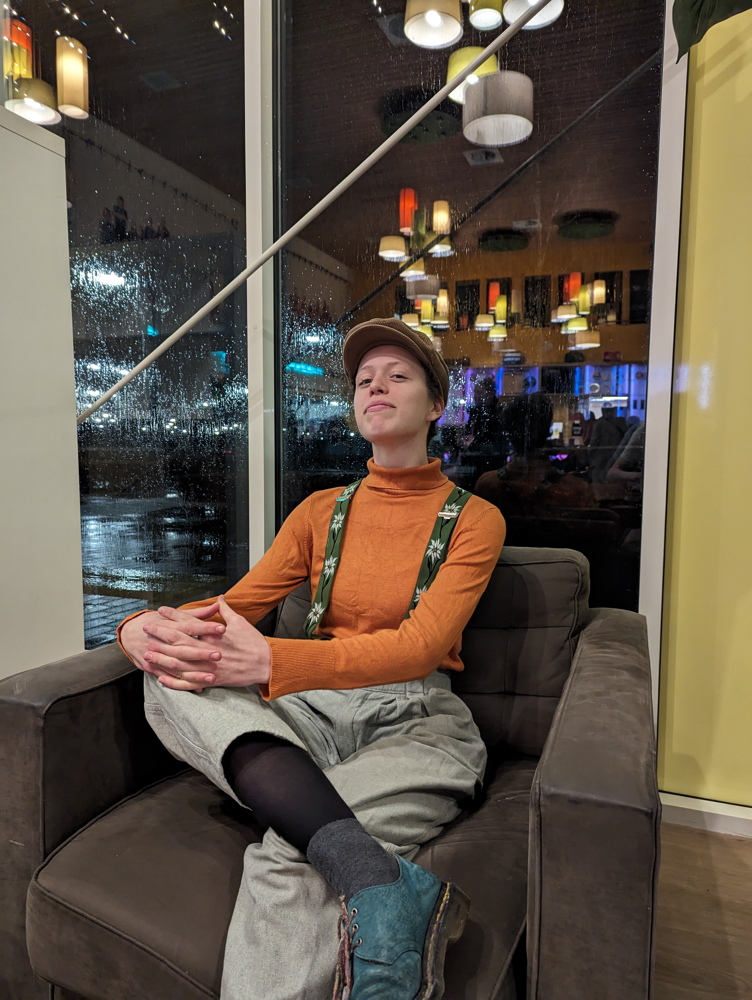
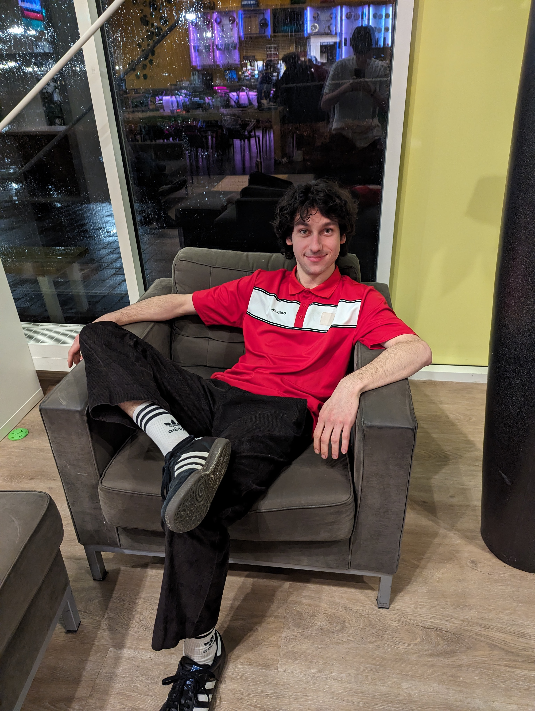

Over Ons
Onze reis als organisatoren van het Nederlandse Jongleer Festival (NJF) 2024 begon bij Jeugdcircus Diedom, waar vier van ons elkaar voor het eerst ontmoetten. Deze eerste ontmoeting legde de basis voor een hechte vriendschap, gekenmerkt door gezamenlijke avonturen en het bezoeken van talrijke festivals. Geïnspireerd door deze ervaringen en onze gedeelde passie voor jongleren, kwam het idee tot leven om zelf een festival te organiseren. Ons 5e lid hebben we ergens op een festival gevonden en ook maar onder onze hoede genomen.
We kijken ernaar uit je te verwelkomen bij het NJF 2024.
Mia
Hoi ik ben Mia, 21 jaar en de trotse voorzitter van het Nederlands Jongleerfestival 2024! Samen met Maud zorg ik voor de meest epische shows op het NJF. Vorig jaar stond ik zelf twee keer in de schijnwerpers, wat echt superleuk was :) Dit jaar hoop ik de artiesten een net zo geweldige ervaring te bezorgen. Begin maar vast met klappen, want de galashow wordt er één om nooit te vergeten!
Jochem
Hoi! Ik ben Jochem, 26 jaar en dit jaar ben ik de penningmeester van het NJF. Ik regel dus dat alle geldzaken zo goed op orde zijn dat we een onvergetelijk festival kunnen hebben. En een onvergetelijk festival kan natuurlijk alleen maar beter worden met heel goed eten. Als hoofd catering zal ik zorgen dat dat wel goedkomt. Ik heb er zin in! Jullie ook? :)

Maud
hoi hoi!! Ik ben Maud, 21 jaar en de secretaris van het NJF 2024! Elk leuk, grappig, serieus of belangrijk mailtje komt aan bij mij en ik zorg dat die mailtjes naar de juiste mensen worden doorgestuurd of ik beantwoord ze mezelf:) Daarnaast zorg ik samen met Mia voor een super vette galashow dit jaar, deze wil je zeker niet missen!! Ik heb er heel veel zin in en hoop jullie allemaal te zien 9 tot 12 mei!!

Florian
Hallo lieve mensen! Ik ben Florian, 24 jaar en woon in Amsterdam (het kan echt). Ik kom sinds 2011 op NJFs en het werd hoog tijd dat ik er zelf eentje organiseerde. Ik ben momenteel 'in between jobs' en heb dus extra veel tijd om bijvoorbeeld de website te bouwen, de subsidies aan te vragen en sponsoring binnen te hengelen. Mijn favoriete moment was op het NJF 2019 toen er op de trap buiten een spontane renegade begon die doorging tot het licht werd. I just lost the game! Doei
Jeroen
Hoi ik ben Jeroen (24). In 2018 was ik al de nachtburgemeester van het NJF, maar in 2024 doe ik er nog een schepje bovenop! Deze keer balanceer ik jouw nachtrust perfect met een zorgvuldig beheerde camping, terwijl nachtbrakers kunnen uitkijken naar mijn epische feestjes. Slaap lekker of feest hard, ik regel het!